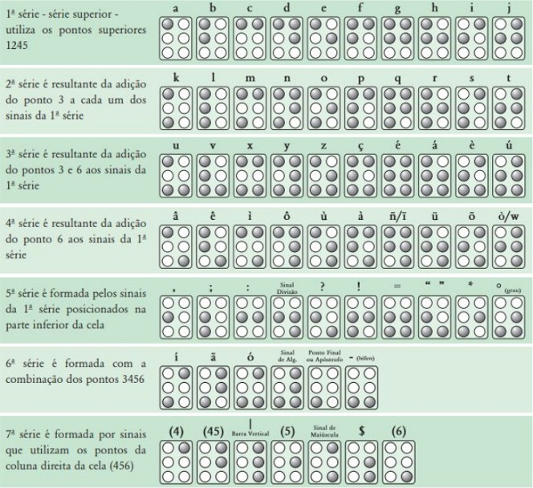

Display Braille

O sistema Braille é indispensável para a alfabetização de crianças com deficiência visual, permitindo o acesso tátil ao alfabeto, à escrita e a símbolos matemáticos e científicos. Os displays Braille eletrônicos, que utilizam células reconfiguráveis, representam uma alternativa aos livros impressos em relevo — volumosos, pesados e de difícil obtenção —, mas seu custo comercial, na faixa de milhares de dólares, inviabiliza a adoção em escolas. Este projeto tem como objetivo desenvolver uma célula Braille eletrônica acessível e de baixo custo, empregando microcontrolador ESP32, micro servomotores e estrutura em impressão 3D, com foco na aplicação educacional e na reprodutibilidade da solução.
O trabalho iniciou-se com uma revisão bibliográfica sobre a educação de pessoas com deficiência visual, o sistema Braille e as tecnologias assistivas disponíveis, seguida do projeto conceitual, no qual foram definidos o hardware e a interface de comunicação. Para o acionamento dos pinos táteis adotou-se o micro servomotor SG90, que reúne precisão de posicionamento, tamanho compacto, baixo consumo e custo reduzido, sendo utilizadas seis unidades por célula, uma para cada ponto. Como unidade de controle, optou-se pelo ESP32, sobretudo, pelo módulo Wi-Fi integrado, que dispensa adaptadores externos e reduz o espaço interno ocupado pelo conjunto. O dimensionamento dos pinos e do espaçamento entre eles seguiu as proporções do padrão de escrita Braille, em conformidade com a norma ABNT NBR 9050.
A comunicação constitui um ponto central do projeto, por permitir que o dispositivo seja móvel e independente de um computador durante o uso. O ESP32 foi configurado como Access Point, criando uma rede local própria e hospedando uma página web na qual o usuário digita a palavra a ser exibida, sem necessidade de roteador externo. O código de controle converte cada caractere na combinação de pontos correspondente e aciona os atuadores, com tempo de exibição configurável para acompanhar a evolução da leitura do aluno. A estrutura foi modelada em 3D, contemplando uma tampa perfurada para a saída dos pinos táteis, e um compartimento para os demais componentes do conjunto. Como o acionamento simultâneo dos seis servomotores pode gerar picos de corrente superiores a 2 A, foi incorporado ao circuito um regulador de tensão com capacidade de até 3 A, garantindo alimentação estável e protegendo os componentes mais sensíveis.

Disposição Universal dos 63 Sinais Simples do Sistema Braille. Fonte: Fonte: BRASIL-SEESP-MEC, 2002, p. 23.
Protótipo final montado, com os seis servo motores e o conjunto de pinos táteis integrados a estrutura impressa em 3D.
O protótipo foi montado e levado a campo no Instituto de Cegos da Bahia, onde sua utilização foi validada e o grupo recebeu retornos dos usuários e educadores da instituição, apontando caminhos de aprimoramento para as próximas versões do dispositivo.